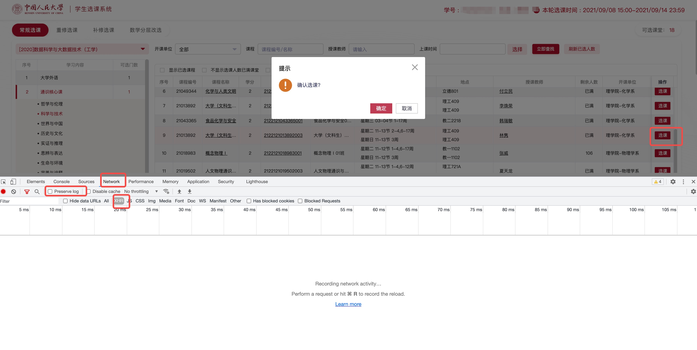
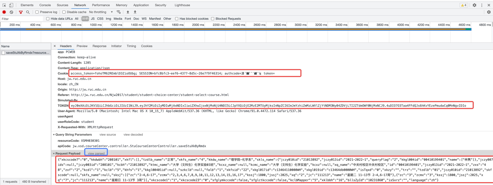

微人大课程中心自动选课器。适用于比手速抢课阶段的自动抢课。
抢课器的原理是: 模拟登录进选课系统, 然后每五秒钟点一次选课按钮并确认, 直到选课成功。
祝你抢课成功，以及，低调使用！
Python3


先点击右侧Request Payload旁边的view source(见上图中蓝框)，把它下面的东西转成字符串。
然后，把Cookie, TOKEN, 以及Request Payload(也就是你要选的课)中的内容复制下来(见上图中的三个红框)。
其中，Payload里面的内容中的所有null需要改成None(注意N大写),所有false需要改成False
如果做了以上步骤后运行有错误，试着将header里面的请求网址复制到脚本内的网址处
xk.py。修改代码里面的payload, cookie, token为你刚才复制的对应内容（详见代码里面的注释）。如果没有安装request库，在终端中使用pip install request安装（如果你不知道这是什么，那么可以上网搜索如何使用pip）
运行命令: python xk.py
当课程没有名额时，程序会一直输出eywxt.save.stuLimit.error字样。
接下来你需要耐心等待。等到程序输出success字样, 就说明你抢到课了。(师兄亲测，通识课一般半小时内都能抢到:)
你的登录Cookie会在每天晚上系统维护时失效。因此，如果你想跨天抢课，需要在第二天系统恢复时重复以上过程，再把程序跑上。